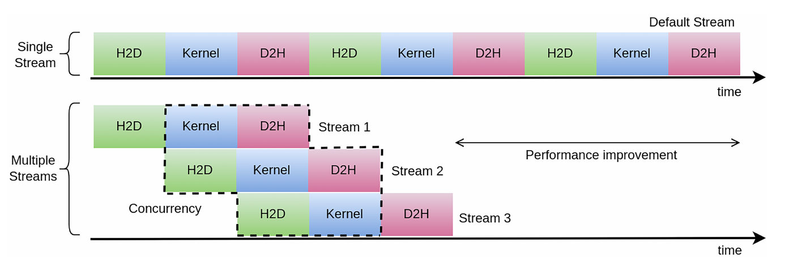
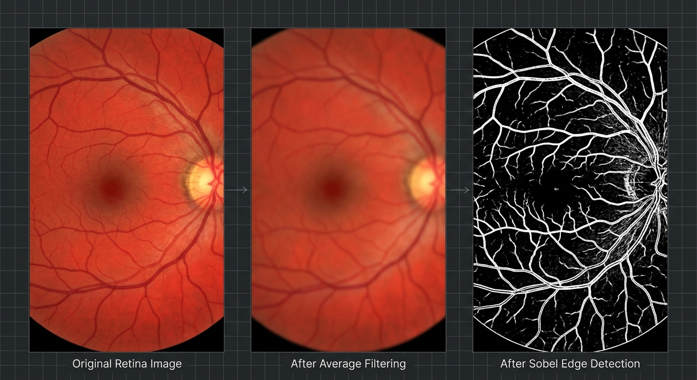
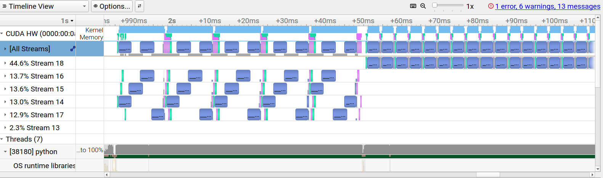
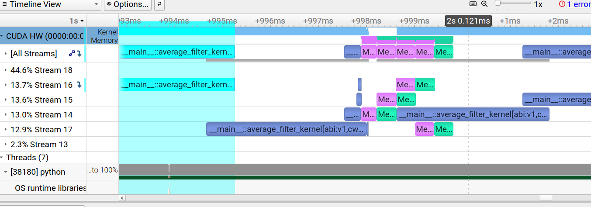
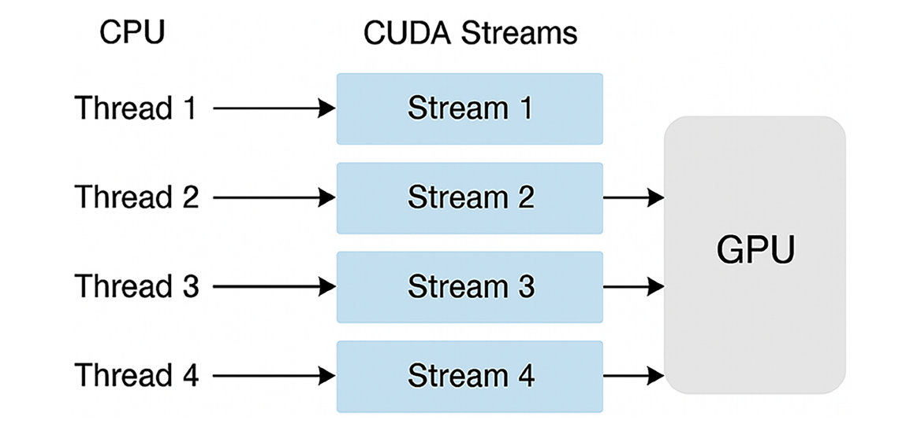

CUDA Stream¶
1. CUDA流¶
1.1 CUDA流的作用¶
CUDA 流是一个用于改善 GPU 工作调度机制的编程抽象。一个流代表了一系列按相对顺序依次执行的操作（例如内核启动和内存传输）。默认情况下，所有的 GPU 工作都在同一个默认流上运行，这会强制执行严格的、串行的执行顺序。通过使用多个流，程序员可以明确表达哪些操作必须按顺序执行，哪些操作是相互独立的，从而允许 CUDA 运行时和硬件调度器去重叠执行数据传输和独立的内核任务。这可以带来更好的 GPU 利用率，并通常能提升性能。
在内存移动成为瓶颈的场景下，流的价值尤为明显。通过将主机到设备（H2D）的内存拷贝、内核执行以及设备到主机（D2H）的内存拷贝分配到不同的流中，应用程序可以将数据传输与计算过程重叠（并行化）。这在实时信号处理、视频处理流水线以及大规模科学模拟中非常常见。此外，流还通过事件（Events）提供了更细粒度的同步机制，从而避免了会阻塞所有 GPU 工作的代价高昂的全局设备同步。
尽管如此，需要注意的是，CUDA 流并不总是带来益处，有时甚至会适得其反。如果你的应用程序只启动了一个已经完全占满 GPU 的单一大型内核（Kernel），那么额外的流不仅无法提升性能，反而可能会增加开销或复杂性。此外，当内核之间存在强数据依赖关系，或者由于硬件限制（例如老旧的 GPU）导致内存传输无法重叠时，流的作用也十分有限。当并发性受限、没有必要，或者引入的复杂性超过其带来的价值时，最好避免使用它们。
1.2 基本概念¶
1.2.1 流与并发¶
一个流可以被看作是一个逻辑上的操作队列，用于在 GPU 上执行。流严重依赖于并发，即多个任务同时运行的能力，即使它们并不在同一时间完成。并发与并行（Parallelism）并不相同。并行意味着使用不同的 GPU 资源同时执行多个内核。而流的并发则是指重叠执行不同类型的操作，特别是 在执行内核的同时在主机（Host）和设备（Device）之间传输数据。当硬件支持异步执行时，CUDA 允许来自多个流的操作并发执行。大多数 GPU 只有一个复制引擎，但某些 GPU（例如 A100）支持两个独立的引擎，允许主机到设备（H2D）和设备到主机（D2H）的内存传输相互重叠，以及与内核执行重叠。
当我们启动内核或执行内存传输时，所有操作都会被放入同一个流中。在此流中，操作始终按照主机提交的顺序依次串行运行。然而，通过创建和使用多个流，我们可以启用并发，使数据传输与内核执行相重叠，从而有助于隐藏数据传输延迟并提高整体性能。
常见的数据处理应用程序需要将不同的数据集传输到设备上，对其运行操作，然后将结果传回。实现这一目标的直接方法是依赖单个流。下面的图表直观地展示了使用单个流如何强制实现串行执行。相反，使用多个流允许数据传输和内核执行之间实现并发，从而带来显著的性能提升，如图所示：

上半部分是单流工作流。所有操作（包括 H2D 复制、内核执行和 D2H 复制）都放在一个流中。由于该流是串行执行的，因此每个操作都必须等待前一个操作完成。内存传输和内核执行无法重叠，这往往会导致 GPU 资源利用率低下。
在多流的情况下（下半部分），操作被分拆到不同的流中（流 1、流 2 和流 3）。只要 GPU 有足够的资源，CUDA 就允许来自不同流的操作并发运行。例如，当流 1 正在运行内核时，流 2 已经可以开始内存传输。流 3 可以进一步将其数据复制与流 1 和流 2 的内核重叠。这种重叠产生了并发性，此时 H2D/D2H 数据传输与计算并肩运行。GPU 空闲时间减少，从而带来更高的吞吐量和更快的整体执行速度。
此外，CUDA 流是一种工具，而不是强制要求，其益处取决于应用程序的特征。在实践中，当有机会重叠任务（包括内核执行和内存传输，无论是 H2D、D2H 还是两者兼有）时，我们应该考虑使用流。如果我们的工作负载由单个大型内核、高度串行的依赖项或一次性的大型数据移动组成，那么使用流可能无法带来明显的效益。通常需要进行性能分析和实验。我们通常先从一个流开始以验证正确性，然后逐步引入额外的流，同时测量性能提升。在处理示例处理管道时，我们也将遵循相同的方法。
1.2.2 隐式同步¶
在 CUDA 中，同步是指协调 GPU 与 CPU 之间，或不同 GPU 任务之间执行过程的机制，以确保某些操作在其他操作开始之前完成。设备与主机之间的同步分为两种类型：显式同步和隐式同步。通过显式同步，我们会刻意等待特定操作完成后再继续。我们在前几章中已经见过了显式同步，例如使用 cuda.synchronize()。相比之下，隐式同步则在某些 CUDA API 调用或操作强制 GPU 完成所有先前任务时自动发生，即使没有请求显式同步。流并发依赖于操作的异步（非阻塞）执行。然而，同步会强制串行化，这会限制使用多个流的优势。因此，我们必须尽量减少或避免不必要的同步，以便充分利用并发性。
在使用流时，同步通常发生在数据传输操作期间，因为内核启动本质上是异步的，因而在主机端是非阻塞的。在实践中，隐式同步往往会阻止计算与数据传输的重叠，从而产生隐藏的瓶颈，进而降低整体性能。
隐式同步的常见原因可列举如下：
- 使用同步 API 进行内存传输（例如，默认流中的
cuda.to_device） - 设备内存分配（例如
cuda.device_array），这会强制所有先前的 GPU 任务完成后分配才会继续 - 主机内存分配（如果处理不当，可能会阻塞）
- 在 NULL（空）流中启动内核，该流与其他所有流具有特殊的同步行为
在传统的 CUDA 中，传统默认流（legacy default stream）中的所有操作也会与其它流隐式同步。这会产生依赖关系，因为即使是互不相关的内核或内存传输也被迫互相等待。从 CUDA Toolkit 7 开始引入的“每个线程一个默认 stream”（per-thread default stream）特性改变了默认流在多线程程序中的行为。每个主机线程都有自己私有的默认流。一个线程的默认流中的操作在该线程内是有序的，但它们不会自动与其他线程默认流中的操作进行同步。这允许多个主机线程独立地启动 GPU 工作，并且在不强制进行不必要串行化的同时，依然能享受到默认流的便利。
一个例子：我们的CUDA程序在流1启动内核1，在Null流(默认流)启动内核2，在流2启动内核3，在默认的 传统默认流（Legacy Default Stream / Null 流，即 0 号流） 模式下，这三个内核会 严格按照 内核 1 -> 内核 2 -> 内核 3 的顺序串行执行，完全无法并发重叠。
传统默认流具有类似于“全局栅栏（Global Fence）”的强同步特性。其具体执行机制如下：
1. 为什么内核 2 必须等内核 1？
当你在 Null 流中启动 内核 2 时，传统默认流会强制要求：在 Null 流中的操作开始执行之前，必须等待该设备上所有其他流（在此处是流 1 中的内核 1）先前所有的任务全部完成。
- 因此，内核 2 绝对无法在内核 1 还在运行或排队时提前开始，它必须等内核 1 彻底结束。
2. 为什么内核 3 必须等内核 2？
反过来，传统默认流还会阻塞后续的其他流：在 Null 流中的 内核 2 执行完毕之前，任何后续在其他流（在此处是流 2 中的内核 3）中提交的操作都无法开始执行。
- 因此，内核 3 必须等到内核 2 彻底运行结束之后，才能被 GPU 调度执行。
由于 Null 流的存在，原本可以通过多流实现并发的结构被强行“腰斩”并串行化：
这就是为什么在 CUDA 编程中，Null（传统默认流）被称为多流并发的“陷阱”。只要你在多流代码中不小心夹杂了一个在默认流中运行的内核或内存拷贝，整个 GPU 的多流并发优势就会瞬间失效，所有流被迫互相等待。
1.2.3 GPU 工作队列（GPU Work Queue）¶
可以并发运行的流（streams）数量受硬件限制。尽管在软件中可以创建数百个流，但 GPU 只能管理固定数量的硬件工作队列（通常为 8 个，但根据 GPU 型号最多可增加到 32 个）。当流的数量超过这一容量时，它们会被多路复用（multiplexed）到相同的队列上。工作队列是一个由硬件内部管理的队列，诸如内核启动（kernel launches）、内存复制和同步等操作都会被提交到该队列中以在 GPU 上执行。工作队列可以被看作是下发命令的主机（Host）与执行命令的设备（Device）之间的一个缓冲区。
早期的 NVIDIA GPU（Kepler 架构之前的架构）只有一个硬件工作队列；无论流及其独立性如何，它们都被导向这个单一的队列。因此，来自多个流的操作被串行化了，即使它们针对不同的内存区域或执行完全不相关的任务。这种串行化经常会产生 伪依赖（false dependencies），即两个操作仅仅因为共享同一个队列而显得彼此依赖，而不是因为它们共享了实际的数据或资源。例如，假设流 A 启动了一个对缓冲区 X 进行操作的内核，而流 B 发起了针对缓冲区 Y 的 H2D（Host-to-Device）复制。在具有单个队列的旧硬件上，流 B 中的复制操作必须等待流 A 中的内核执行完毕，尽管 X 和 Y 之间是完全独立的。Hyper-Q 技术通过提供多个硬件工作队列解决了这个问题，允许在资源充足的情况下并发执行独立的流。
2. Numba CUDA中创建流的方法¶
CUDA 操作（包括内核启动和内存复制）默认会放入空流（null stream）或 默认流（default stream）中。这个特殊的流强制实行串行执行，从而阻止了内核之间或数据传输与计算之间的重叠。为了实现并发，我们在 Numba-CUDA 中使用 cuda.stream() 显式创建非默认流。一旦创建，这些流就会表现为独立的任务队列，放入不同流中的操作可以潜在地并发执行。
例如，可以使用以下代码创建两个流（stream1 和 stream2）：
from numba import cuda
stream1 = cuda.stream()
stream2 = cuda.stream()
在拥有此类可用流的情况下，如果 GPU 具备必要的资源（例如空闲的计算单元和充足的内存带宽），我们就可以在不同的流中并行启动内核。与特定流关联的内核启动看起来像这样：
my_kernel[blocks, threads, stream1](device_array_1)
my_kernel[blocks, threads, stream2](device_array_2)
额外的流参数告诉 CUDA 在非默认流中调度该内核。使用多个流可以实现操作的重叠。必须指出的是，这些启动对于宿主线程（host thread）是非阻塞的，这意味着 CPU 在分派它们之后可以立即继续执行其他任务。如果未指定流，则启动会进入默认流，该流会随后串行化执行，并且通常会与宿主代码隐式同步，从而限制了并发的机会。
需要时，每个非默认流也可以独立进行同步。调用 stream1.synchronize() 或 stream2.synchronize() 会使宿主仅等待在该特定流中排队的所有操作全部完成。这不同于设备范围的 cuda.synchronize()，后者会一直阻塞，直到设备上的每一个流都完成其工作。流级别的同步提供了对执行顺序更精细的控制，并允许在其他流中重叠进行的操作继续推进，而不会产生不必要的停顿。
3. 异步数据传输¶
诸如 cuda.to_device() 和 cuda.copy_to_host() 之类的同步复制会通过强制隐式同步来阻塞 CPU 线程，直到传输完成。这意味着 CPU 在等待期间无法调度内核或进行其他传输，从而阻止了数据移动与计算之间的重叠。为了实现这种重叠，我们必须改用异步拷贝，即使用 cuda.to_device(..., stream=stream) 或 device_array.copy_to_host(stream=stream)。这些函数会立即将控制权交还给 CPU，让 CPU 在数据传输于后台进行的同时，继续调度内核或进行进一步的传输。
以下代码片段演示了如何在两个独立的流上发起两个异步传输：
device_array_1 = cuda.to_device(array_1, stream=stream1)
device_array_2 = cuda.to_device(array_2, stream=stream2)
在大多数 GPU 上，每个方向（H2D 或 D2H）同时只能有一个传输与计算重叠。然而，更现代的 GPU（例如 A100）配备了独立的复制引擎，除了能够并发运行内核之外，还可以同时进行 H2D 和 D2H 传输。
为了让异步传输与计算重叠，所涉及的主机内存必须是 锁页内存（pinned 或 page-locked memory）。锁页内存不会被操作系统换出（paged out），从而确保 GPU 可以通过直接内存访问（DMA）直接访问它，而无需隐式的暂存（staging）或隐式同步。如果没有锁页内存，在代码中表现为异步的传输在底层仍然会强制进行同步。在 Numba-CUDA 中，锁页的主机数组可以使用 cuda.pinned_array 或 cuda.pinned_array_like 轻松分配，它们返回的对象行为类似于常规的 NumPy 数组，但由锁页内存支持。
以下是准备一个锁页数组并为其填充用于 GPU 传输的值的示例：
pinned_array = cuda.pinned_array((1000,), dtype=np.float32)
pinned_array[:] = np.arange(1000, dtype=np.float32)
从 NumPy 的角度来看，可分页内存和锁页内存没有区别。因此，带有锁页内存后端（backend）的 NumPy 数组与常规数组的行为完全相同。尽管如此，NumPy 默认总是使用常规的主机分配机制，并且没有锁页内存的概念——这完全是一项 CUDA 专有的优化。
此外，在 GPU 本身上分配内存也会隐式地强制同步，从而消除了并发性。一个常见的策略是提前分配所需的设备缓冲区，然后将其重复用于后续的传输和内核启动。原则上，这可以避免同步开销，并保持数据移动和计算的持续流动。
简而言之，为了实现并发，必须满足以下条件：
- 使用非默认流
- 异步执行内存复制
- 使用锁页主机内存以启用非阻塞传输
- 预分配设备和主机内存以防止隐式同步
4. 使用 CUDA 流加速图像处理¶
为了演示 CUDA 流在实际中的应用，我们将利用目前讨论过的内容，为视网膜图像分析构建一个图像处理流水线。由于该用例通常包含大量高分辨率图像，CUDA streams（CUDA 流）允许我们重叠计算和数据移动的不同阶段，从而比单流工作流更好地利用 GPU 资源。
该流水线通过均值滤波（average filter）后接索贝尔边缘检测（Sobel edge detection）来突出血管结构。均值滤波可抑制噪声并柔化精细细节，否则这些细节可能会干扰边缘检测。Sobel 边缘检测则会强调脉管系统沿线的梯度信息，从而帮助勾勒出静脉和动脉的路径。下图显示了应用这两个图像滤波后的视网膜示例图像。识别血管网络对于诊断糖尿病视网膜病变非常有用，无论是通过专家检查还是通过在筛查阶段支持深度学习模型：

流是如何提升性能的？假设我们将一幅图像序列分配到四个流中。一个理想的场景是这样的：一个流负责处理第一张图像的均值模糊，而另一个流可以同时将第二张图像从主机传输到设备。又或者，另一个流可能已经在对先前模糊过的图像执行 Sobel 操作，而第四个流则可以将早期图像的最终边缘检测结果复制回主机。GPU 并发调度这些独立任务，从而有效地隐藏了传输延迟。
4.1. 定义 CUDA 内核¶
在本节中，我们将实现构建图像处理流水线所需的 CUDA 内核，然后演示如何将这些内核与多个流一起使用。应当记住，理解均值滤波或 Sobel 边缘检测的确切实现并不是我们讨论的核心。我们学习的重点应该放在如何利用 CUDA 流启用并发，以提高 GPU 利用率和整体性能。这部分内容了解一下即可。
4.1.1 均值滤波¶
我们首先实现一个用于对灰度图像进行操作的均值滤波 CUDA 内核。均值滤波将每个像素的值计算为其周围局部邻域内像素值的平均值。如果窗口大小为 (2s+1) \times (2s+1)（其中 s 是模糊尺寸），则位置 (x, y) 处新像素强度的公式如下：
在这里，I(y, x) 是输入图像在某个像素处的强度，I_{blur}(y, x) 是模糊后的输出强度。边界条件（例如，靠近边缘的像素）通常通过忽略越界的邻居、镜像或填充来处理：
@cuda.jit
def average_filter_kernel(
gray_image: DeviceNDArray,
blurred_image: DeviceNDArray,
) -> None:
x, y = cuda.grid(2)
if (
x < gray_image.shape[1]
and y < gray_image.shape[0]
):
blur_size = 5
sum_val = 0.0
for dy in range(-blur_size, blur_size + 1):
y_idx = y + dy
for dx in range(-blur_size, blur_size + 1):
x_idx = x + dx
if (
0 <= x_idx < gray_image.shape[1]
and 0 <= y_idx < gray_image.shape[0]
):
sum_val += gray_image[y_idx, x_idx]
blurred_image[y, x] = sum_val / (2 * blur_size + 1) ** 2
该内核在线程的二维网格上操作，其中每个线程负责计算单个像素的模糊强度值。对于每个像素，内核计算以该像素为中心的方形邻域内的平均强度。邻域大小由 blur_size 决定，在这种情况下，它被设置为 5，因此每个线程查看一个 11 \times 11 像素的窗口。该内核预期两个参数：gray_image（灰度输入图像）和 blurred_image（将存储模糊结果的输出数组）。两者都表示为 DeviceNDArray，意味着它们驻留在 GPU 内存中。
每个 CUDA 线程负责计算单个像素的模糊值。对 cuda.grid(2) 的调用为二维网格布局中的每个线程生成一个唯一的 (x, y) 坐标，对应于图像中像素的列和行。实际的模糊是使用方形邻域滤波器执行的。关于 dx 和 dy 的嵌套循环遍历该邻域。对于每个偏移量，代码检查相邻像素是否落在图像边界内。如果是，则将像素值添加到 sum_val。在累加所有有效的相邻像素值后，内核通过将总和除以窗口中的总像素数 (2 \times blur\_radius + 1)^2 来计算平均值。然后，该平均值被存储在 blurred_image[y, x] 中。结果，该滤波器减少了输入图像中的噪声和精细细节。
接下来，我们定义一个用于应用 Sobel 边缘检测的 Numba-CUDA 内核。
4.1.2 Sobel 边缘检测内核¶
Sobel 边缘检测是一种经典的图像处理技术，它通过检测水平和垂直方向上的强度梯度来突出边缘。它通过将图像与两个 3 \times 3 滤波器进行卷积来计算图像强度的梯度：一个用于检测水平变化（G_x），一个用于检测垂直变化（G_y）。Sobel 算子如下：
对于每个像素，梯度的计算如下：
在这里，I(y, x) 是输入图像的灰度强度。然后，边缘幅值由以下公式给出：
然后再使用 M(x, y) 生成边缘图，突出强度变化强烈的区域：
@cuda.jit
def sobel_edge_detection_kernel(
gray_image: DeviceNDArray,
edge_image: DeviceNDArray,
) -> None:
x, y = cuda.grid(2)
if (
x < gray_image.shape[1]
and y < gray_image.shape[0]
):
const_sobel_x = cuda.const.array_like(SOBEL_X)
const_sobel_y = cuda.const.array_like(SOBEL_Y)
sum_val_x, sum_val_y = 0.0, 0.0
for dy in range(-1, 2):
y_idx = y + dy
for dx in range(-1, 2):
x_idx = x + dx
if (
0 <= x_idx < gray_image.shape[1]
and 0 <= y_idx < gray_image.shape[0]
):
sum_val_x += const_sobel_x[dy + 1, dx + 1] * gray_image[y_idx, x_idx]
sum_val_y += const_sobel_y[dy + 1, dx + 1] * gray_image[y_idx, x_idx]
edge_image[y, x] = math.sqrt(sum_val_x**2 + sum_val_y**2)
在顶部，两个小的 3 \times 3 卷积算子（SOBEL_X 和 SOBEL_Y）被定义为 NumPy 数组。这些代表标准的 Sobel 掩码，其中一个强调水平梯度，另一个强调垂直梯度。这些矩阵随后通过 cuda.const.array_like 放入常量内存中，这为所有线程提供了快速的只读访问。sobel_edge_detection_kernel 内核同样接受两个参数：gray_image（通常已被上一步的均值滤波平滑的输入图像）和 edge_image（将容纳代表边缘的梯度幅值的输出数组）。
每个线程再次对应一个像素，坐标由 cuda.grid(2) 决定。它在其像素周围执行 3 \times 3 卷积。它循环遍历 [-1, 1] 范围内的 dx 和 dy 偏移量，对应于像素的邻域。对于每个有效的邻居，它将像素值乘以相应的 Sobel 滤波器系数。贡献被分别累加到 sum_val_x 和 sum_val_y 中。一旦邻域处理完毕，就会计算梯度幅值。该值反映了该像素处边缘的强度，而与其方向无关，并被写入 edge_data[y, x]。在我们的用例中，该内核将平滑后的灰度图像转换为边缘图，突出视网膜扫描中的血管边界和其他结构过渡。
接下来，我们将重点放在生成图像、创建流和预分配数组上。
4.2. 准备内存与 CUDA 流¶
我们首先定义 generate_images 函数来生成合成的随机图像数据，并可选择将其放在锁页内存（pinned memory）中以便进行高效的 GPU 传输。其目的是为我们后续的流水线基准测试模拟一个图像流（例如视网膜扫描）：
def generate_images(
num_images:int = 1,
shape: tuple[int, int] = (1024, 1024),
dtype = np.float32,
pinned_memory: bool = True,
) -> Iterator:
empty = cuda.pinned_array if pinned_memory else np.empty
rng = np.random.default_rng()
for _ in range(num_images):
buf = empty(shape, dtype=dtype)
rng.random(buf.shape, dtype=buf.dtype, out=buf)
yield buf
该函数接受几个参数，例如要生成的图像数量（num_images）、形状（shape）、数据类型（dtype），以及更重要的 pinned_memory 布尔标志。后者指示是否应在页锁定内存中分配数组，这对于 CUDA 中的异步数据传输至关重要。我们有条件地选择数组分配方法，并使用 cuda.pinned_array 在页锁定内存中创建数组。否则，它默认使用标准的 np.empty。
初始化一个随机数生成器（np.random.default_rng()）以用数据填充图像。我们首先分配一个缓冲区（buf），并使用 rng.random 在 [0, 1] 范围内用随机值对其进行初始化。然后，使用 out=buf 参数将输出值直接复制到分配的数组中。最后，该函数逐个生成并 yield 每张图像，而不是一次性返回所有图像。在更高级的场景中，这种方法甚至对于无限数量的图像也能保持内存效率，并允许处理流水线在图像生成时立即开始消耗它们。
NumPy 默认分配的主机内存是可分页的（pageable），这意味着操作系统可以自由地将其在物理 RAM 中移动。在 GPU 能够访问可分页内存中的数据之前，CUDA 驱动程序必须首先在幕后将其复制到临时的锁页缓冲区中，然后才能启动向设备内存的传输。这个额外的步骤不仅使传输变慢，更重要的是，它阻止了数据传输与内核执行之间的重叠。
另一方面，锁页内存（pinned memory）被锁定在物理 RAM 中，因此操作系统无法移动它。当使用锁页内存时，数据传输可以与其它流上的计算内核并发重叠。相反，如果使用可分页内存，驱动程序将被迫进行隐式同步，从而破坏并发性。
接下来，我们为多流 GPU 处理流水线设置所需的内存和流：
NUM_IMAGES = 1000
NUM_STREAMS = 4
images = [m for m in generate_images(NUM_IMAGES)]
streams = [cuda.stream() for _ in range(NUM_STREAMS)]
outputs = [cuda.pinned_array(m.shape, dtype=m.dtype) for m in images]
shape, dtype = images[0].shape, images[0].dtype
preallocated_device_arrays = [
(
cuda.device_array(shape, dtype=dtype, stream=stream),
cuda.device_array(shape, dtype=dtype, stream=stream),
)
for stream in streams
]
我们首先使用前面定义的生成器函数初始化一个由 NUM_IMAGES 张合成图像组成的列表。每张图像都是锁页内存中的一个 NumPy 数组，用于模拟高分辨率视网膜扫描。接着，我们创建了 NUM_STREAMS 个 CUDA 流，它们是 GPU 操作的独立队列。输出端分配了主机端锁页内存用于存储结果，每个输出缓冲区对应一个输入图像，从而能够高效地将 GPU 计算结果复制回主机。
我们还为每个流预先分配了设备内存数组。通过使用 cuda.device_array(..., stream=stream)，它创建了驻留在 GPU 上的数组，以保存该流中每个图像的中间结果。preallocated_device_arrays 表示每个流两个设备数组的元组，稍后将用作 CUDA 内核的暂存存储。这些主机和设备内存的预分配能够有效防止隐式同步，这对于多流 CUDA 应用程序至关重要，可确保每个流都拥有专用于流水线执行的独立缓冲区。
4.3 处理图像¶
我们接着定义一个名为 process 的函数，用于在特定的 CUDA 流上处理给定的图像：
def process(
image,
stream,
preallocated_device_arrays,
output,
) -> None:
d_array1, d_array2 = preallocated_device_arrays
cuda.to_device(image, stream=stream, to=d_array1)
threads = (16, 32)
blocks_x = math.ceil(image.shape[1] / threads[0])
blocks_y = math.ceil(image.shape[0] / threads[1])
blocks = (blocks_x, blocks_y)
average_filter_kernel[blocks, threads, stream](d_array1, d_array2)
sobel_edge_detection_kernel[blocks, threads, stream](d_array2, d_array1)
d_array1.copy_to_host(output, stream=stream)
该函数接受四个参数：image（作为一个 NumPy 数组）、stream（该图像的所有 CUDA 操作都将排队进入其中）、preallocated_device_arrays（保存中间设备数组）以及 output（最终边缘检测后的图像将被复制到的主机 NumPy 数组）。输入图像首先使用 cuda.to_device 复制到 GPU，并放置在给定流内的第一个预分配设备数组（d_array1）中。使用流输入可确保此传输是异步的，并且可以与在不同流中排队的其它操作重叠。
接下来，计算内核启动配置。threads = (16, 32) 定义了二维布局中每个块的线程数，并使用 math.ceil 计算 blocks_x 和 blocks_y 以覆盖整个图像尺寸。这些值定义了用于模糊和 Sobel 内核的 CUDA 块二维网格。
随后，GPU 计算分两步进行。首先，在预分配的 d_array1 上启动 average_filter_kernel，在 d_array2 中生成模糊图像。其次，启动 sobel_edge_detection_kernel，以 d_array2 作为输入，并将最终的边缘图写回 d_array1 中。两个内核启动都与同一个流关联，确保它们在该流内按顺序执行，但仍可以与 GPU 上的其它流并发运行。
生成的边缘检测图像使用 d_array1.copy_to_host 复制回主机内存（output），同样在同一个流中进行。这完成了一张图像的处理，所有数据传输和计算都局限于单个流。
最后，我们在多个 CUDA 流上处理图像，以重叠计算和数据传输：
# 开始计时
start_time = time.perf_counter()
for index, (image, output) in enumerate(tqdm(zip(images, outputs))):
stream_index = index % len(streams)
result = process(
image,
streams[stream_index],
preallocated_device_arrays[stream_index],
output,
)
# 显式同步所有 CUDA 流，确保所有异步任务在计时结束前真正完成
for stream in streams:
stream.synchronize()
# 结束计时
end_time = time.perf_counter()
elapsed_time = end_time - start_time
print(f"多流流水线总耗时: {elapsed_time:.4f} 秒")
第一个循环同时遍历输入图像及其对应的输出缓冲区。在循环中，stream_index = index % len(streams) 变量以循环（round-robin）的方式将每张图像分配给一个 CUDA 流。这确保了工作负载在多个流之间的分发，从而使数据传输和内核执行能够重叠。然后，针对每张图像调用 process 函数，并传入相应的流、预分配数组和输出参数。循环结束后，代码显式同步所有流。
stream.synchronize() 确保在各个流中排队的所有操作均已完成。这保证了当程序继续执行时，所有图像都已完全处理完毕，并且其结果可以安全地在主机内存中获取。
4.4 实验对比¶
完整代码在numba-cuda-lab/image_processing_streaming_v2.py，执行结果：
(numba-cuda-lab) lili@b203822998b0:~/numba-cuda-lab$ python image_processing_streaming_v2.py
配置参数 -> num_images: 2000, num_streams: 4, image_shape: (1024, 1024)
正在生成单张基准测试大图，分辨率: (1024, 1024)...
正在进行 GPU 内核与显存预热 (Warm-up)...
预热完成！
开始多流流水线测试...
2000it [00:00, 4125.62it/s]
多流流水线总耗时: 5.4260 秒
开始非流水线（单流串行）测试...
100%|██████████████████████████████████████████████████████████████████████████████████████████████████| 2000/2000 [00:04<00:00, 412.56it/s]
非流水线（单流串行）总耗时: 6.5101 秒
我们看到，流水线的方式比非流水线要快一些。另外流水线是异步的方式，所以进度条很快。最后等在：
for stream in streams:
stream.synchronize()
而非流水线的同步方式，每一个处理都需要同步，所以进度条很慢，但是最后的non_pipeline_stream.synchronize()几乎不花时间。
4.5 使用nsys查看¶
我们现用nsys profile抓取事件：
nsys profile -o ip_stream python image_processing_streaming_v2.py --num_images 20
整体如下图：

可以看到，使用多流，计算和数据传输确实是并发执行的，而使用单流，它们是串行执行的。我们放大多流的某个片段，如下图所示：

很明显可以看到粉色的DtoH和绿色的HtoD和蓝色的Kernel是同时执行的。
5. CUDA 事件¶
CUDA 事件是轻量级的 GPU 跟踪器，能够提供精准的计时和细粒度的同步功能。它们常用于测量内核执行时间或协调任务的执行顺序。由于事件被直接放置在 GPU 的命令队列中，它们反映的是实际的设备执行情况，而不仅仅是主机下发工作时的瞬时状态。在 Numba-CUDA 中，我们可以使用 cuda.event() 创建事件，并将其记录在特定的流上。例如，在内核发射（launch）之前放置一个事件、在之后放置另一个事件，然后查询它们之间经过的时间，我们就可以获得单个内核或一系列内核的精确性能测量数据。这使得 CUDA 事件在分析内核如何重叠或比较不同实现方案时非常有用。
事件也是一种强大的同步机制。例如，一个流可以记录一个事件，而另一个流可以被指示等待该事件，从而在不强制进行整个设备级全局同步（如 cuda.synchronize()）的情况下，确保特定的执行顺序。在主机端，调用 event.synchronize() 会一直阻塞，直到该点之前的所有 GPU 工作全部完成。这在需要获取结果或后续操作依赖于早期 GPU 任务完成时非常有用。
5.1 测量各个流的执行时间¶
在接下来的示例中，我们将展示如何使用 CUDA 事件来测量每个流的执行时间：
events_begin = [cuda.event() for _ in streams]
events_end = [cuda.event() for _ in streams]
[event.record(stream) for event, stream in zip(events_begin, streams)]
for index, (image, output) in tqdm(
enumerate(zip(images, outputs))
):
stream_index = 0 if index < 500 else index % len(streams)
process(
image,
streams[stream_index],
preallocated_device_arrays[stream_index],
output,
)
[event.record(stream) for event, stream in zip(events_end, streams)]
[stream.synchronize() for stream in streams]
stream_elapsed_times = [eb.elapsed_time(ee)*0.001 for eb, ee in zip(events_begin, events_end)]
for index, elapsed_time in enumerate(stream_elapsed_times):
print(f"Stream {index+1} finished after {elapsed_time:<.2f} s")
每个流都获取一对事件（开始事件和结束事件），以便我们测量所经过的时间。events_begin 为每个流的启动设置了标记，而 events_end 则为每个流的完成设置了标记（在调用 process 函数之后）。我们将每个 events_begin[i] 插入到 streams[i] 的当前位置。这指示了流的计时起点。我们像前面的示例一样遍历图像和输出。
出于演示，我们选择了一种特殊的流分配策略：前 500 个图片总是分配给流索引 0，在此之后，再在所有流之间进行轮询（round-robin）分发。在提交了所有工作之后，将 events_end[i] 插入到每个流的尾部。这意味着只有当该流完成了其排队的所有任务后，events_end[i] 才会标记为完成。stream.synchronize() 会等待所有流都运行结束再继续执行。如果没有这一步，CPU 可能会在 GPU 完成工作之前就继续向下执行。ee.elapsed_time(ee) 给出了每个流中 events_begin[i] 和 events_end[i] 之间以毫秒为单位的时间；将其乘以 0.001 即可转换为秒。
最后，我们测量并报告了每个流的活动持续时间，这有助于分析工作负载分配是否均匀。同理，我们也可以对单个内核的执行或内存传输进行计时。
(numba-cuda-lab) lili@b203822998b0:~/numba-cuda-lab$ python image_processing_streaming.py
.......省略.......
Stream 1 finished after 2.88 s
Stream 2 finished after 1.37 s
Stream 3 finished after 1.37 s
Stream 4 finished after 1.37 s
(numba-cuda-lab) lili@b203822998b0:~/numba-cuda-lab$
输出结果给出了每个流的执行时间。流 1 明显需要更长的时间，耗时 2.88 秒，而其他三个流在 1.37 秒的时间内就完成了。这种不平衡的发生是因为流 1 承载了额外的任务——在其余流开始之前，它先处理了前 500 张图像。因此，尽管其他流完成得更早，但流 1 的时间线最终主导了总的挂钟时间（wall-clock duration）。
5.2 不同流直接的同步¶
为了解决前面观察到的“Stream 1 负载过重导致整体耗时被拖累” **的问题，我们可以在多个流之间引入**事件依赖屏障（Event Barrier / Inter-stream Dependency）。
在 Numba-CUDA 中，这是通过 stream.wait_event(event) 来实现的。它的核心思想是：不强制触发全设备同步（cuda.synchronize()），而是允许特定流在硬件队列层面挂起，直到另一个流中的某个特定事件（如处理完前 500 张图）完成为止。
events_begin = [cuda.event() for _ in streams]
events_end = [cuda.event() for _ in streams]
event_done = cuda.event()
[event.record(stream) for event, stream in zip(events_begin, streams)]
for index, (image, output) in tqdm(
enumerate(zip(images, outputs))
):
s_index = 0 if index < 500 else index % len(streams)
process(
image,
streams[s_index],
preallocated_device_arrays[s_index],
output,
)
# Add stream dependencies
if index == 500:
event_done.record(streams[0])
[event_done.wait(stream) for stream in streams[1:]]
[event.record(stream) for event, stream in zip(events_end, streams)]
[stream.synchronize() for stream in streams]
stream_elapsed_times = [eb.elapsed_time(ee)*0.001 for eb, ee in zip(events_begin, events_end)]
for index, elapsed_time in enumerate(stream_elapsed_times):
print(f"Stream {index+1} finished after {elapsed_time:<.2f} s")
这一次唯一的不同在于，当处理到第 500 张图像时，event_done.record(streams[0]) 会向 stream[0] 的队列中插入一个事件。其他流（streams[1:]）会一直等待，直到该事件完成。在实际运行中，Stream 1、2、3 等流会被阻塞，直到 Stream 0 达到处理 50 张图像的里程碑。
输出结果表明，由于引入了依赖关系，所有流的耗时都变得相近：
Stream 1 finished after 2.99 s
Stream 2 finished after 3.00 s
Stream 3 finished after 3.00 s
Stream 4 finished after 3.00 s
6. 多 CPU 线程与 CUDA 流结合¶
在前面的示例中，排队到多个流上的所有 CUDA 操作都是由单个 CPU 线程下发的。如果准备任务并将其提交到流中需要消耗大量的 CPU 处理资源，或者主机端因 I/O 操作而阻塞，这可能会成为计算瓶颈。在这种情况下，多个 CPU 线程可以并发地向 GPU 下发工作，如下面的图所示。如果仅由单个线程负责，I/O 或主机端的预处理操作往往会使 GPU 工作串行化，而多线程在此时尤为有用。CUDA 运行时 API 是线程安全的，因此每个 CPU 线程都可以独立创建和使用自己的 CUDA 流。这样一来，当其他流仍在处理数据时，CPU 能够持续不断地向 GPU 喂送任务：

对于 Python 而言，必须考虑全局解释器锁（GIL）的影响。尽管 GIL 限制了纯 Python 代码的并行执行，但多线程依然很有价值，特别是当工作负载以 I/O 为主时（例如读写磁盘或网络）。
以下代码片段演示了如何结合使用 ThreadPoolExecutor 和 CUDA 流来重叠（overlap）CPU 端 I/O 与 GPU 计算：
from concurrent.futures import ThreadPoolExecutor, wait
futures = []
with cuda.defer_cleanup():
with ThreadPoolExecutor(max_workers=len(streams)) as executor:
for index, output in tqdm(enumerate(outputs)):
s_index = index % len(streams)
futures.append(
executor.submit(
load_and_process,
f"tmp/image{index}.npy",
streams[s_index],
preallocated_device_arrays[s_index],
output,
)
)
wait(futures)
cuda.synchronize()
每个线程负责加载一部分输入文件，将它们传输到 GPU，并使用特定的流和预分配的设备缓冲区执行计算。任务到流的映射同样采用轮询（round-robin）方式，从而确保工作均匀地分摊到可用的流中。cuda.defer_cleanup() 上下文管理器会延迟设备内存的清理（释放），以避免隐式同步。ThreadPoolExecutor 会创建一个工作线程池，每个 CUDA 流对应一个线程。这使得 CPU 能够同时向多个流准备和提交工作。executor.submit(...) 用于调度 load_and_process 函数在工作线程中运行。该函数从磁盘加载图像，将其复制到锁页内存（pinned memory）中，然后送入 process 函数。
随着任务被提交到线程池，其对应的 future 对象会被收集到一个列表中。一旦所有任务都已启动，wait(futures) 就会确保主机端不会提前退出，并等待所有线程完成其工作。随后，cuda.synchronize() 会一直阻塞，直到所有流上的 GPU 工作全部完成。这种模式允许多个 CPU 线程在不同的 CUDA 流上并发地准备数据和发射内核，从而在其他线程继续进行 I/O 或主机端预处理的同时，保持 GPU 处于持续忙碌的状态。